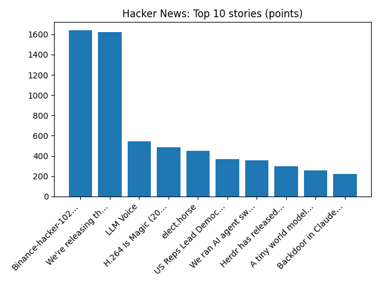

Yorkshire Water boss resigns after firm downgraded
BBC — Business
YOUR DAILY INTELLIGENCE BRIEF · 2026-10-30
Global watch: Yorkshire Water boss resigns after firm downgraded, US tech stocks see sharp falls over AI cost fears.
Northern Virginia: Northern Virginia gymnast talks dreams of 2028 Olympics - NBC4 Washington, 8 Places to Order Delicious Thanksgiving Pies in Northern Virginia - Northern Virginia Magazine.

Global coverage includes Yorkshire Water boss resigns after firm downgraded; US tech stocks see sharp falls over AI cost fears; Russia is back in the ice hockey world championships after sports court ruling - AP News. Local coverage includes Northern Virginia gymnast talks dreams of 2028 Olympics - NBC4 Washington; 8 Places to Order Delicious Thanksgiving Pies in Northern Virginia - Northern Virginia Magazine.

2015–16 All-Ireland Junior Club Hurling Championship
The 2015–16 All-Ireland Intermediate Club Hurling Championship was the 13th staging of the All-Ireland Junior Club Hurling Championship, the Gaelic Athletic Association's third inter-county club hurling tournament. On 7 February 2016, Glenmore won the championship following a 2–9 to 0–12 defeat of Eoghan Rua.
https://en.wikipedia.org/wiki/2015%E2%80%9316_All-Ireland_Junior_Club_Hurling_Championship
Runs so far today: 2